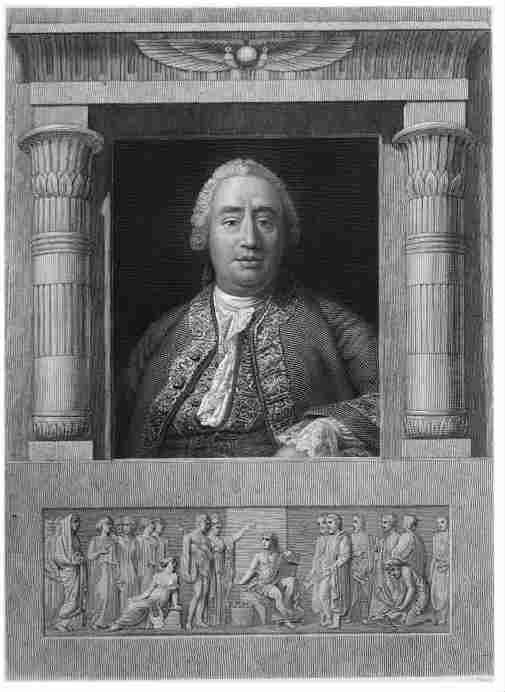
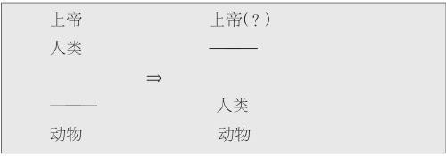
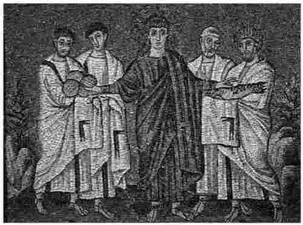

包括笔者——你们现在的哲学向导在内，许多人都认为苏格兰哲学家大卫·休谟（1711—1776）是所有用英语写作的哲学家中最伟大的一个。他多才多艺：他撰写的多卷本《英国史》影响深远，以至于他在有生之年同样以历史学家而著称；他还写作政治（主要是关于宪法的）和经济方面的评论。他认为自己所做的这一切都是为了完成一个总的研究计划，即对人类本性的研究。《人性论》虽然是他年轻时所写，但却是一部杰作。该书分三卷，于1739至1740年间出版，其中讨论了人类信仰、情感和道德判断问题。书中追问了信仰、情感和道德各是什么，是如何被创造出来的。
休谟对人类的本质是什么有着确信不移的认知，他关于上述问题的著作都是在这种确信的基础上写成的。他还确信一种认知，这种认知对他来说也同样重要，即人类不是什么。这是一种独特的错觉，在我们有可能接受任何更具有积极意义的观点之前必须加以摒除。要记住大部分伟大的哲学体系都不是简简单单地在我们以前的信仰上增加或是减去一两个事实，而是摒弃一套完整的思维方式，用新的取代。这其中可能有大量的细节问题，但是只要稍向后退，就会发现其中是有广阔天地的。

图4休谟貌似钝拙，实则聪颖。“从脸上根本无法看出他的独创性才智，尤其是他思维的敏感性以及活跃性，”一位拜访过休谟的人写道。
休谟想要彻底根除的概念有其宗教根源。严肃看待那句老话——上帝按照自己的模样创造了人类，会发现这句话实际上把人类看作是杂交体；人类生活在这个世界，但并不完全属于这个世界。我们的一部分，即我们的身体，是自然物体，受自然规律和自然发展过程的影响；但是我们还有不朽的灵魂，它天生具有理性，并且能够理解什么是道德观——这就是上帝之所以按照自己的模样创造了人类的原因。动物则很不一样。它们没有灵魂，它们只是精密复杂的机器，仅此而已。人类和动物之间存在着重大的差别，有一条显著的分界线，但是在人类和上帝之间并没有。休谟想要改变这种说法，他认为人类并非低一级的小毛神，在某种程度上人类是稍高一级、体形中等的动物。

不要漏掉右上角加上的问号。左边一栏引导我们过高估计人类的理性。如果从合适的角度来看，我们会发现自己既划错了分界线，同时又注定无法想清楚什么应该被划在这条分界线以上，因为我们尚未达到那个层次。
因此，关于理性在生活中的重要性，休谟有许多话可说。他认为理性的作用并不像自己的反对者认为的那么大，或者说并非反对者认为的那种类型。随后他谈到反对者们要求理性完成的事中有大部分实际上需由其他因素，即人性的方法来完成；关于人性的方法，休谟发展了一种广博的理论，这种理论是我们现在所谓的早期认知科学的雏形。但是当休谟直接论及宗教信仰时（他写了很多，见本书“参考书目”），他没有使用宏大的理论，而是诉诸常识以及人们日常生活观察所得。因此他的《论奇迹》就是另一部浅显易懂的经典哲学著作。如果把阅读比作居家，那么这本书的出发点如果不是在起居室，那也是在家门口。
但是，我们不能想当然地认为这其中所有的内容都是我们非常熟悉的。休谟接下来要证明的是：如果我们相信发生了一个奇迹，而我们的证据都源自他人的描述（通常几乎都是这样的），那么这种认定是有悖于理性的，因为让我们相信所称的奇迹并没有 发生的理由应该至少与我们认为它发生的理由一样充分。实际上，休谟认为，让人相信奇迹没有发生的理由往往更充分些。这个话题他需要谨慎对待，原因有二。首先，在休谟发表《论奇迹》之前不到二十年，有个叫托马斯·伍尔斯顿 [1] 的人在监狱中度过了生命中最后几年时光，就因为他声称光凭《圣经》中关于耶稣复活的记录并不足以让人相信这样一件很不可能发生的事；休谟现在要谈的与此绝非毫无关联。第二，休谟的确想改变同时代的人，尤其是他的同胞们对宗教的看法。如果这些人不看他的书，那么他们的看法就无法改变，所以休谟必须春风化雨般地引导他们。
因此，在开头第一段休谟把“蒂洛森大主教” [2] 搬了出来。如果能宣布自己的观点是从一个大主教新近才提出的观点发展而来的，还有什么比这更能说服人呢？要想更有说服力，除非还能加上一点：大主教的观点可以决定性地驳斥罗马天主教的某个特定教义？休谟的读者中有绝大部分都不同程度地反对罗马天主教，他们会觉得顺眼、满意，然后继续往下读。
探讨这个观点本身之前，还有一个问题：为什么休谟觉得就奇迹是否发生的证据问题进行写作如此重要？这其实是他系统研究宗教信仰的理由这个整体计划的一部分，通常认为这些理由有两类。一方面是人类依靠自己的经验、利用自己的推理能力推断出来的；另一方面则源自神的启示，即某部圣典或某个权威人士。但是这也导致另一个问题：有些圣典可能是骗人的，而权威也可能是假的，怎样才能区分真假呢？回答是真正的启示必然伴随着奇迹出现。因此发生奇迹非常重要，它能证明宗教的权威性。（奇迹的发生最终是由尽可能重要的权威人士来宣布的；人们普遍接受的一个观点在此为休谟所采纳，该观点认为奇迹的发生必然违背自然法则，因此只有上帝或者上帝赋予其神圣力量的人才能创造奇迹。）因此，认为我们永远也不可能有充分的理由相信奇迹的发生，这样宣称是具有颠覆性的，它相当于声称人类的理性不足以区分真正的启示和虚假的启示。
下面来谈休谟的观点。休谟讨论的出发点为人所熟知，因为我们都经常要靠别人讲一些事给我们听。这样做在大部分情况下都没有什么问题，但是有时我们所听到的却被证明是错的。我们还时不时从不同的人那里听到相反的说法，这样我们就知道其中至少有一个人说错了，尽管我们可能永远无法弄清到底是谁错了。我们对为什么会有错误的说法也略知一二——为了自己的利益，为了保护他人，为了维护自己心中极为珍爱的事业，为了使讲述的故事更精彩，或者仅仅因为一个严重的错误，因为贸然相信先前的说法，因为恶作剧，或是其他什么原因。我们大部分人在一生中都会有犯错的时候，而且大部分都是由于上述原因，因此我们认识到这一点并不仅仅是通过他人的论述（正如休谟有些话中暗示的那样）。我们都知道人类的证词有时候需要小心对待，在某些情况下更是如此。
假设我告诉你在上周某个正常上班的日子，正午之前我驱车横穿伦敦南北，路上没有看到一个人影，也没有遇到一辆交通工具——没有一辆小汽车，没有一辆自行车，也没有一个步行者——我经过的时候，所有的人都碰巧在其他地方。你可能会怀疑我说这要么是在荒谬地夸大路上出奇的安静，要么是在检验你是否容易上当受骗，要么是在回忆一个梦境，要么就是发疯了，但是有一点你不可能相信：我所说的是真的。你会想，任何事情都可能发生，就这件事不可能。
你这样认为是明智的。即使我所说的的确是真的（这也是可以想象的，因为当时没有人非得跟我同路，他们也许 都决定待在别处），如果就因为我是这样说的你就相信了，那也是完全不理智的。如果你当时和我一起，亲眼看到空旷的街道，那么情况或许就有所不同了。但是我们现在谈论的是你只依靠我的证词的情况。
你或许能看出休谟的观点已经开始成形。考虑到奇迹事件在巩固宗教信仰方面所起的作用，这样的事件必须是根据经验判断几乎不可能发生的。如果奇迹属于那类能够轻易发生的事，那么随便哪个老骗子，只要有点运气或者时机掌握得当，就能抓住机会获取神圣的权威。但是如果奇迹是几乎不可能发生的，那就只有最可靠的证据才足以让人相信其发生。一个聪明人被迫在两种不可能发生的事情之间进行选择时，会如同休谟所说的，依靠证据来决定信仰，选择发生可能性相对较大的一方。因此证据必须来自这样的聪明人，这些证据发生错误的可能性比他们所描述的事件发生的可能性更小。但是这很难办到，因为正如你所见，上述事件发生的可能性已经极小。
这样从理论上来讲 ，我们完全有可能拥有足够有力的证词作为证据，但是这也足以产生一个严重的疑问——我们是否对于任何一个奇迹都真正 拥有足够的证据。我们知道即使是亲眼所见也可能判断错误，或者是被人有意欺骗。许多人都有过这样的经历：同是曾经在事情发生的现场，自己对事情的描述与另一个人的不一样，而且往往是在事情发生之后的一两天之内。我们知道的许多奇迹事件都是通过他人转述，而这些人也并不是目击者，并且在通过文字或口头进行转述时已是事情发生许多年之后。这样的描述有许多都出自宗教信徒之口，而该宗教正是利用所谓的奇迹来支撑自己。法庭可能会认为这样的目击证人实际上是非常不可靠的——有些时候，因为这些证词根本不可靠，法庭根本就不想听他们作证。
那么是否存在不引人怀疑的对奇迹的描述？要回答这个问题，听起来我们似乎需要翻遍所有有文字记录的历史资料。但是休谟认为这样做没有必要，因为并不是说奇迹发生的可能性必须相当小，而是说奇迹必须在某种意义上是不可能 的，即违背自然规律的（并不仅仅是奇妙的，……而是真正神奇的）。这就是休谟对奇迹所下的定义，也是他希望读者能够接受的定义。这个定义使我们可以用一种略微不同但是却更具有决定性作用的形式来再次表述休谟的观点，这种形式也是休谟喜欢的形式。
我们得到关于某件被视为神奇的事情的报道——方便起见，我们称这件事情为事件 ——并且被要求相信事件发生过，相信事件的发生违背自然法则。既然我们有足够的理由来相信这样一件事情的发生是违背自然法则的，那么它肯定与我们自身的经验不符，与我们最熟悉的关于自然如何运转的理论不一致。但是如果上述说法成立，我们就必须拥有绝对充分的理由才能相信事件并没有 发生——实际上，这样的理由必须是我们曾用来证实任何这类事件的确发生的最充分理由。
那么反过来，我们又有什么理由相信事件的确 发生了呢？回答是对事件的报道，即据说 事件的确发生这一事实。那么对事件的报道是否有足够的力量击败反方的理由，让人们相信事件曾经发生，也即使事件最终获胜呢？不，休谟说，（从理论上说）报道的说服力与其他理由的说服力不相上下，但是绝不可能比其他理由的说服力强。可能有这样的情况：一些地位足够高且有良好声誉的证人在合适的环境下提供证据，那么根据自然法则（心理学法则），这些证据必定是真的。但是这仅仅意味着我们有最充分的证据来相信或质疑“事件”的发生，真正明智的做法则并非相信奇迹的发生，而是困惑和犹疑。

图55世纪绘画作品中描绘的关于面包和鱼的奇迹。为五千人提供食物？还是为人们提供思考的养分？
注意上段括号中“从理论上说”这几个词。休谟认为在现实生活中我们还没有发现这样的情况，并且给出了一系列理由进行说明。如果休谟生活在我们的时代，他可能会补充一点：心理学研究已经发现一些惊人的事实，说明人类的记忆和人类提供的证据不可靠，但是并没有迹象表明心理学界正在集中力量研究在怎样的条件下，人类记忆和证据的可靠性才能完全得到保证。考虑到休谟列出的扰乱性因素涉及的范围，我们也不应该期望心理学研究能做到这一点。
实质上，上面所写就是休谟的观点。毫不奇怪，他的观点引发了大量争论，而且争论现在还在继续。下面就略呈两点，以使读者窥见一斑。这些内容同时也巧妙反映了心理学讨论乃至一般性的辩论中经常出现的两个特征，因此很有必要关注一下：一方面，有些批评意见尽管本身完全正确，却会遗漏一些论点；另一方面，有些反对意见则认为往往一个论点被用来“证实太多的东西”。
我们可以说休谟的观点是在相信奇迹发生的可能性必须（至少）相当小的基础上得出的，但是难道他的反对者们不会否认这一点吗？毕竟，他们是相信奇迹的。因此尽管他们也许会认为——借用休谟自己的例子——伊丽莎白一世死而复生的说法远不值得认真考虑，正如休谟本人会认为的，但考虑到他们心目中耶稣的形象，他们可能会认为所谓的耶稣复活的奇迹根本不是不可能的事。但是在反驳这些反对者时，休谟难道没有回避这个问题的实质——与其说是证实了他们是错误的还不如说仅仅是假设他们是错误的？
但是我们应该从休谟的角度出发这样回答：上面误会了休谟正在做的事情。休谟正在问的是，有什么原因首先使得人们形成各种宗教信仰。一旦这些观点已经形成，世界看起来会完全不一样，不同的观点似乎也都是合理的——关于这两点休谟在任何时候都不会有异议。他也没有必要对此有异议，因为这两点对是否能够证实奇迹的发生，“从而为一种宗教体系的形成奠定基础”这个中心问题毫无影响。
综上所述可见，第一种反对意见仅为无的放矢，但是第二种反对意见不同，它给休谟带来了更多的麻烦。难道他的观点不是在表明，改变自己关于自然法则的看法永远都是不合理的？但是这种改变恰恰是科学进步的主要途径，因此如果这种改变 违反理性，则任何关于相信奇迹存在是违反理性的指责看起来都会变得不那么重要。“如果我不比牛顿、爱因斯坦之流差，”信仰者们会说，“那么我根本无所谓。”
为什么人们可能会认为在此情形下休谟的论点有些过分？好吧，假设我们有充分的理由相信某事是自然法则，因为到目前为止我们所有的经验都与之一致，而且当前最先进的科学理论也证实了这一点。现在，再假设一些科学家提供报告说自己的实验结果与之冲突。那么，休谟的观点难道不会让我们当场就拒绝接受他们的报告吗？如果说我们有证据证明他们报告中所述的事情不可能发生，那么这些证据就跟我们所能找到的其他任何证据一样充分；而从问题的另一方面考虑，我们只拥有——科学家们提供的证据。这不就刚好与休谟关于奇迹的描述所讨论的情形完全一样吗？
休谟在动笔时似乎是想预先提出一些批评意见：“因为我承认，如果是另一种情形（即当这个问题并非关于某种宗教体系形成的基础时），可能就会出现奇迹——违反正常自然规律的事，这种奇迹允许通过人类的证据来进行证明……”随后休谟又描述了一种假设（哲学家们经常使用假想的例子来验证某个观点的说服力）：在所有人类社会中都有关于一次长达八天的黑夜的描述，而且黑夜什么时候开始、什么时候结束，都完全一致。接下来，休谟又说，显然我们应该接受这种描述，并且开始思考这个非同寻常的事件可能是由什么引起的。不过休谟没有明确告诉我们举这个例子能使问题有什么不同，而这一点正是我们需要知道的。
我想如果我们就这一点挑战休谟的话，他应该可以回答得更好，当然也更清楚。他也许会说，在我刚刚勾勒的情形下（倒数第二段），科学界大概不会 相信所给的描述，并且在几个科学家重复这个实验 并得出几乎一致的结果之前都会极为理智地不予相信。这时，对所作描述的相信已不仅仅是简单的证据问题，同时也关乎大范围的观察。我们可以要求科学实验的结果能够重复验证，我们也的确是这样做的，但是我们无法要求奇迹再次发生。当奇迹出于某种原因无法再次发生时，那些坚持认为奇迹不可能发生的人很容易自圆其说，而我们则应该谨慎对待科学发现，一如对待宗教问题那般。
尽管我们无法完全肯定，但也许这就是休谟想要说的。在他所说的假设情形中，所有 的文化族群中都能找到关于一次黑夜长达八天的说法。在那个信息交流缓慢、不便，并且很可能产生片面性或错误的年代，他可能是这样看待自己的这个故事的：毫无疑问，其中所有不同的族群都是独立 观察并最终得出几乎一致的结果，因此整个情形就相当于几次重复同一个实验并得出几乎一致的结果。正如我在段落开头所说的，我们无法完全肯定——即使是休谟，探讨这个问题的世界上最优秀的哲学家之一，也并非一直都很肯定。但是我们能够完全肯定的是，休谟想说的远不止 这些。前文引用了休谟的一个假设，在这个假设所在段落的结尾我们看到这样一句话：“也许，通过如此多的类比，自然的衰败、腐烂和消散这些事件可以这样解释：任何看起来有可能导致这种灾难的现象都能通过人类的证词得到证实，如果这些证词来自多方且相当一致的话。”
或者换句话说，所谓的八日长夜的确非同寻常，但是自然偶尔不按常规运行并不非同寻常。所以我们没有理由认为这样的事不可能 ，因此也就无法将其与奇迹出现的情形进行比较。关于休谟的《论奇迹》，要研究其中一些细节问题须花费大量时间，而且有许多人已经花费大量时间来研究了。但是我们的哲学之旅要继续往前了。